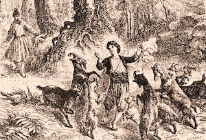

Cofee Legends
The history of coffee begins somewhere around thirteenth century but we don’t know precisely when because we don’t have written documents about when we started to use it as a refreshing drink. What we have are the legends so they’ll have to do.
First one says that a Yemenite Sufi mystic Ghothul Akbar Nooruddin Abu al-Hasan al-Shadhili was traveling through Ethiopia and on that travel he noticed some birds that were unusually lively. He tried the berries he saw that the birds had been eating and felt the same vigor. Berries were the coffee cherries.
Second legend says that coffee was discovered by a Sheik Abou'l Hasan Schadheli's disciple - Omar. Although he was known for his ability to cure the sick through prayer, he was once exiled from Mocha to a desert cave near Ousab and was trying to survive. While trying some berries from a shrubbery, he found them to be bitter. He roasted and boiled them and got a drink from which he felt better. When the stories of the drink reached Mocha, Omar was asked to return and was made a saint.
Third legend says that a goat-herder noticed that his goats behaved restless when they eat berries from the bush so he tried them himself.
History tells us differently. The first evidence of coffee drinking appears in the middle of the 15th century, in the Sufi monasteries of the Yemen in southern Arabia. It came there from Ethiopia where it was native. From there coffee spread to Egypt and North Africa. By the 16th century, it was known on the rest of the Middle East, Persia and Turkey. Middle East was the point from which coffee spread to Italy and from there to the rest of the Europe. Dutch transported coffee to the East Indies and to the Americas.
After the Venice, where coffee came first in Europe, first real coffeehouses appeared in Vienna in 1683 after the Battle of Vienna. British East India Company and the Dutch East India Company imported the first coffee to Britain in 16th century. In 1669, Soleiman Agha, Ambassador from Sultan Mehmed IV, brought large quantity of coffee beans. North Sea ports of Germany had first German coffeehouses in 18th century. Gabriel de Clieu brought coffee seedlings to Martinique in the Caribbean somewhere in 1720 while the coffee was introduced to Brazil in 1727. Coffee was introduced to India in 1670 and it grows coffee since then. Japan first heard for coffee in 17th century but it was very affected by trading bans and import barriers that happened from time to time. Today, Japan is one of the leading per capita coffee consumers in the world. (History of Coffee website)